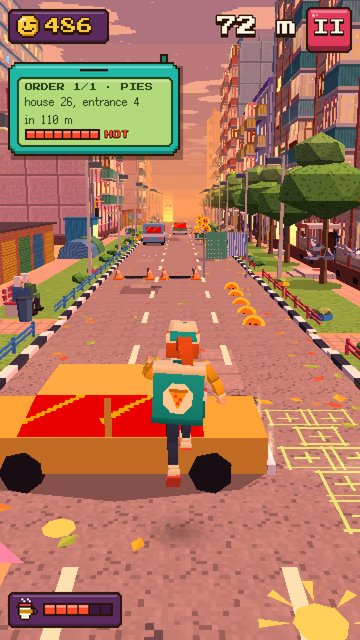

Courier Rush: Delivery Runner
Deliver it all hot, the neighbourhood is waiting!
- Runner
- Pixel 90s
- Works offline
- Free
- 6+
The pizza is still steaming and the door is four hundred metres away! Run with Dasha the courier through a pixel 90s neighbourhood: panel blocks, benches with grannies, a corner shop open all night, pigeons and cats on the windowsills. You are the neighbourhood's delivery runner.
Jump over manholes and barriers, slide under laundry on a line and dodge the cars coming out of the yard arches. Grab an order at a café window and dash onto the glowing doormat at the right entrance: "Delivered!" The hotter the order, the bigger the tip.

- ←left
- →right
- ↑jump
- ↓slide
What's inside
- 🏃Endless Run and 300 RoutesRun for a new distance record, or take on the "Routes" in 10 districts.
- 🌇Morning, sunset and neon nightAll in a single run, with autumn rain and New Year snow.
- 🛴VehiclesA scooter, a folding bike, roller skates, a moped, a shopping trolley, a skateboard and a home-made rocket bike.
- 🐕Barbos, the yard dogRuns after you: he just smells the pizza.
- 🚌A bus at the stopWeave between the passengers, and sometimes an order waits right at the doors.
- ☕BoostersCoffee, a tip magnet and spring sneakers.
- 🎒A wardrobeSix outfits for Dasha and backpacks in many colours.
- 🏡"My yard"Swings, a dovecote and garlands, and the neighbours you deliver to come out with gifts.
- 🎄Holidays by the calendarNew Year, March 8, autumn and summer, each with its own orders, tasks and a keepsake for the yard.
- ⭐Daily route and ranksDaily tasks and ranks from Trainee to District Legend.
10 districts:
- the home yard
- Poplar Street
- the market
- a construction site
- a park with a pond
- the station
- the cottage quarter
- the industrial zone
- a New Year district
- downtown at night
Nobody ever gets hurt: Dasha lands on her backpack like a beetle on its back and runs on. The game works offline, in English and Russian.